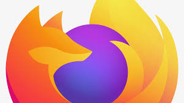

|
O responsável pela criação do JavaScript foi Brendan Eich, um programador contratado pela Netscape em 1995, em uma época de intensa competição entre navegadores. A Netscape queria tornar seu navegador, o Netscape Navigator, mais interativo e competitivo, então Eich foi encarregado de desenvolver uma linguagem de script que permitisse ao navegador reagir às interações dos usuários. Eich criou a linguagem em apenas 10 dias, inicialmente chamando-a de Mocha. Depois, foi renomeada para LiveScript e, finalmente, JavaScript — o que foi uma jogada de marketing da Netscape para aproveitar a popularidade do Java, que tinha acabado de ser lançado pela Sun Microsystems. JavaScript trouxe uma mudança radical para a web, permitindo que elementos de uma página respondessem a eventos do usuário, como cliques e movimentos do mouse, algo que era impensável nas páginas estáticas da época. A linguagem foi pensada para ser fácil de aprender e leve, permitindo a criação de scripts rápidos e executáveis diretamente no navegador. Em 1997, JavaScript foi padronizado como ECMAScript pela ECMA International, assegurando sua continuidade e evolução. Desde então, a linguagem tem sido expandida com recursos mais complexos, permitindo a criação de aplicações inteiras e de grande escala, sendo uma das mais usadas no mundo até hoje. |
|
Após criar o JavaScript, Brendan Eich permaneceu na Netscape, onde ajudou a consolidar a linguagem e a promover sua adoção. Em 1998, ele cofundou a Mozilla Foundation, que assumiu o compromisso de promover uma web aberta e lançou o navegador Mozilla Firefox, oferecendo uma alternativa de código aberto ao Internet Explorer. O Firefox teve grande impacto na web, conquistando milhões de usuários e ajudando a moldar os padrões modernos da internet. Em 2016, Eich fundou a Brave Software, que desenvolveu o navegador Brave. Este navegador foca em privacidade e segurança, bloqueando anúncios e rastreadores para proteger os dados dos usuários e garantindo uma navegação mais rápida e privada. A Brave também implementa um sistema de recompensas por meio de criptomoedas, incentivando um modelo de publicidade mais ético. Tanto a Mozilla quanto a Brave permanecem ativas no mercado e influentes na tecnologia, com o Firefox e o Brave se destacando por suas abordagens únicas e valores de respeito à privacidade do usuário e ao código aberto. Essas contribuições refletem o legado de Eich em promover uma internet centrada na liberdade e no controle do usuário sobre seus dados. |
 |